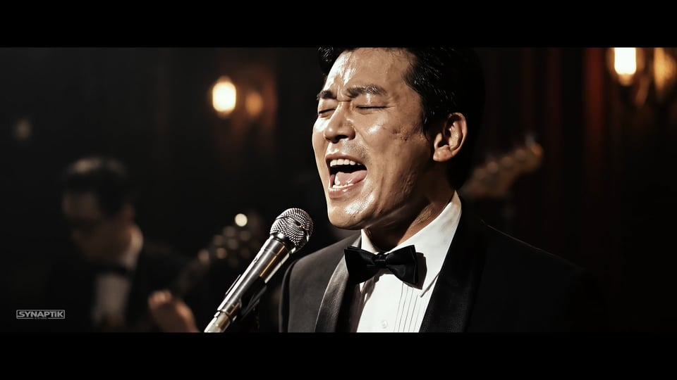

ŒUVRE 04Fuck it
04
Fuck it
Création · IA générative
Un même mouvement traverse différents personnages, époques et univers. Une recherche sur la continuité du geste et le montage.
ŒUVRE 07 / Expérimentation · Science-fiction · IA générative
Une recherche visuelle de science-fiction autour d’une moto futuriste et d’un paysage urbain enneigé.

NOTE DE LECTURE / 07
Le contraste entre la moto jaune, la neige et le béton donne à la séquence son identité visuelle.
ÉCHOS / AUTRES ŒUVRES
Création · IA générative
Un même mouvement traverse différents personnages, époques et univers. Une recherche sur la continuité du geste et le montage.

Clip · Création personnelle
Un film musical qui interroge, avec ironie, le rapport entre intelligence artificielle, authenticité et émotion humaine.